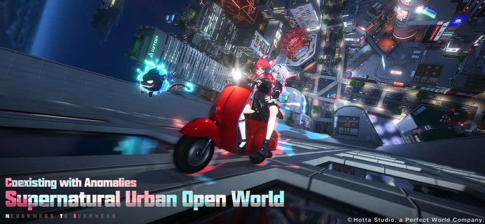

NEVERNESS TO EVERNESS · O‘ZBEK FAN-JAMOASI
Hethereauga
Hethereauga
xush kelibsiz.
NTE yangiliklarini o‘zbek tilida kuzating: versiyalar, tadbirlar va nteuzb jamoasidan xabarlar.
So‘nggi yangiliklar
Yangiliklar arxiviNTE bo‘yicha qidiruv

Hethereau ko‘chalarida nimalar bor?
Ochiq shaharni aylaning, transport boshqaring va oddiy ko‘chalarda uchraydigan g‘ayritabiiy hodisalarni o‘rganing.
O‘yin olamini ko‘rishnteuzb bo‘limlari
Missiya videosini topishTopshiriq nomi bo‘yicha qidiring
EnsiklopediyaPersonajlar, hikoyalar va kuchaytirish
O‘yin olamiHethereau shahri va anomaliyalar
Qo‘llanmalarO‘yinni o‘zbek tilida o‘rganing
VideolarRasmiy videolar va jamoa qo‘llanmalari
JamoaTelegram, Instagram va Discord’da bizni toping
Yuklab olishKompyuter, telefon va konsol uchun